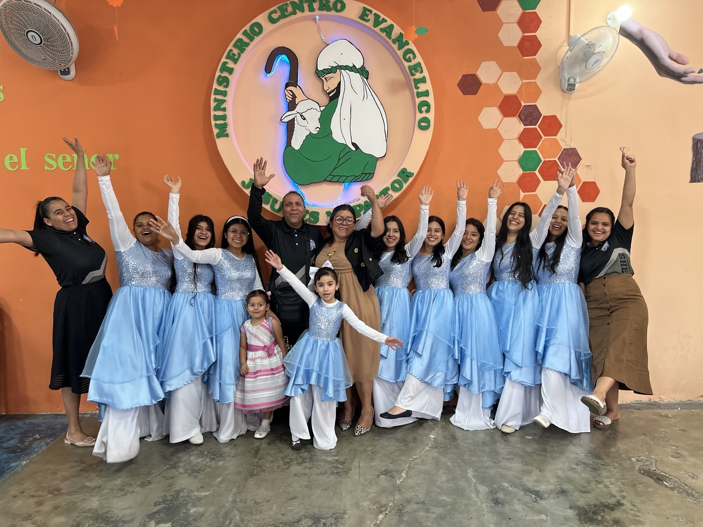
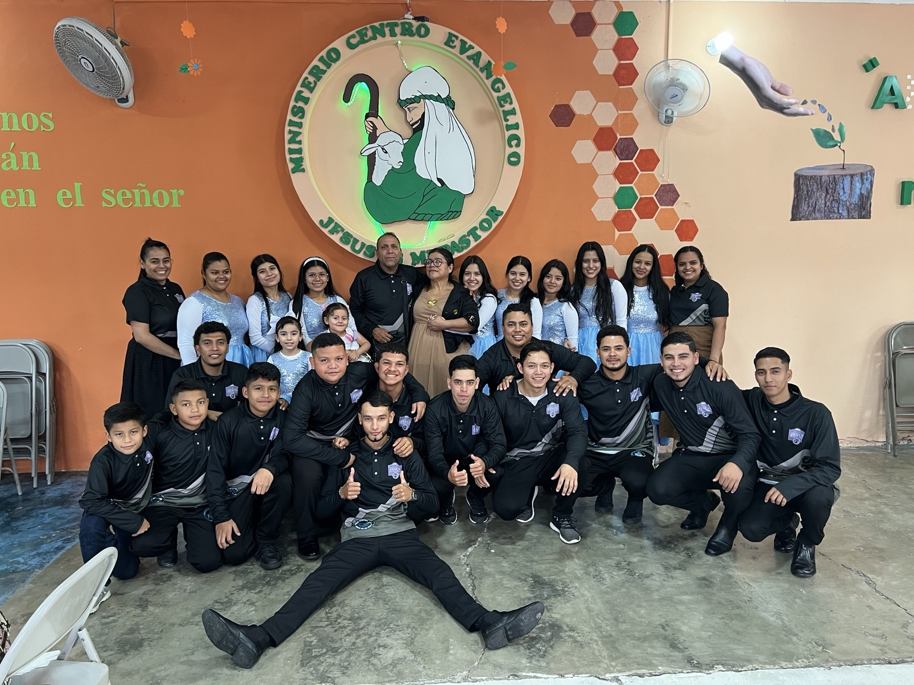
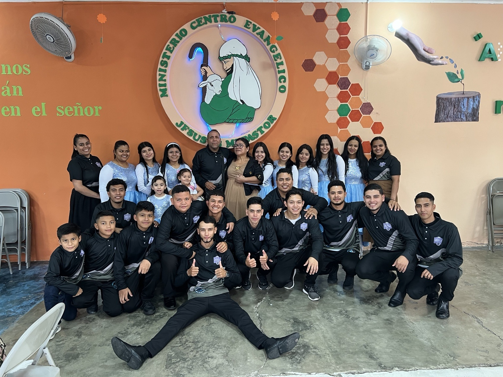
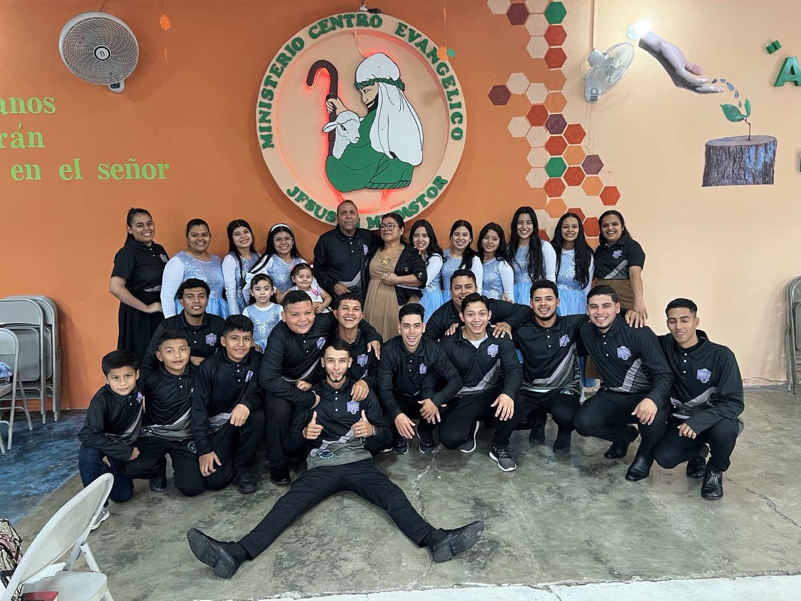
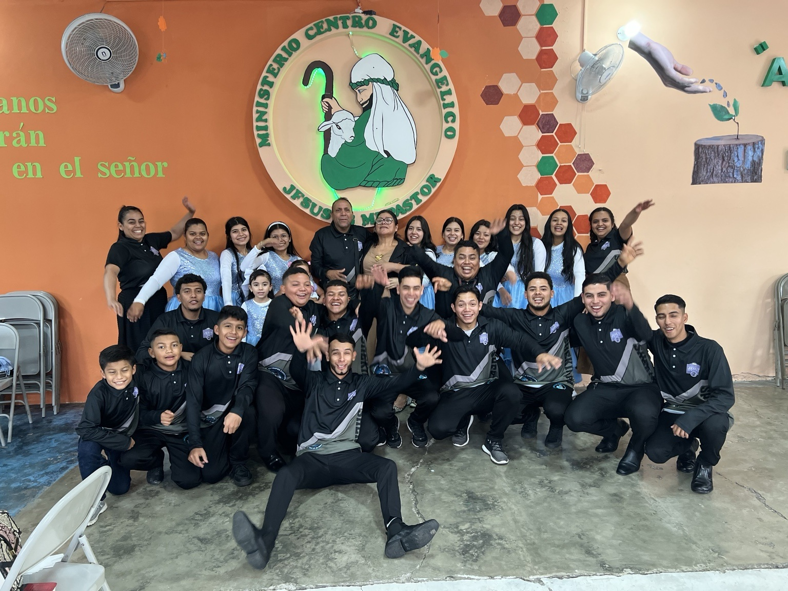
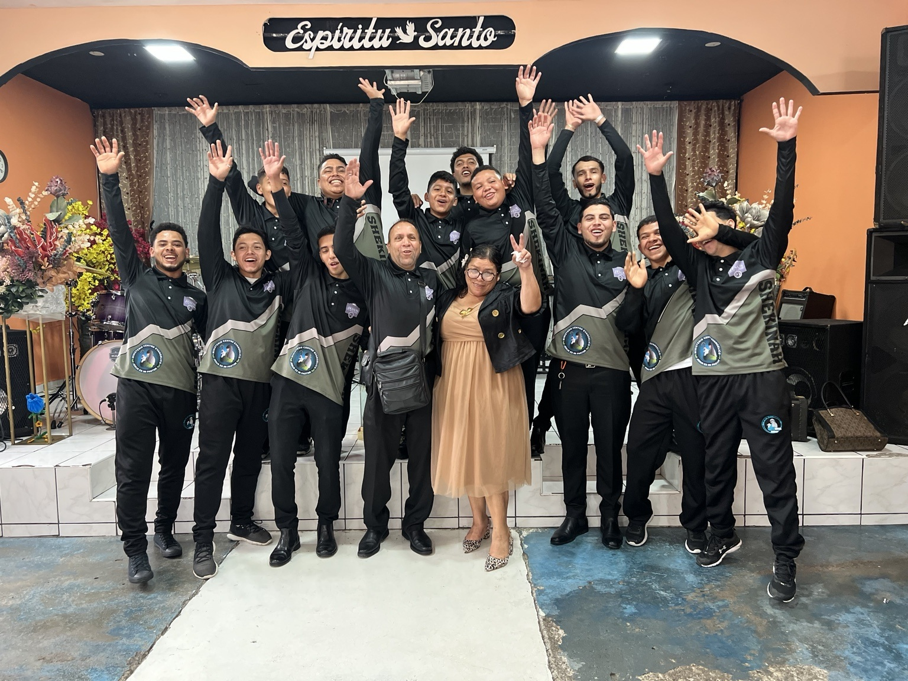
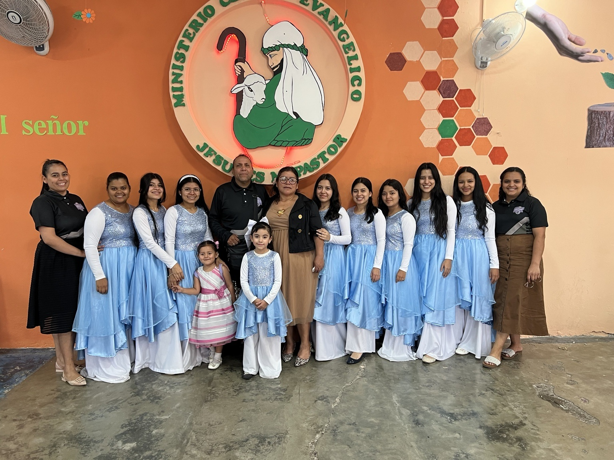

Ministerio de Jóvenes
Ayudar a los jóvenes a conocer a Cristo, crecer en la fe, desarrollar sus dones y servir.
Fotos del ministerio







Ayudar a los jóvenes a conocer a Cristo, crecer en la fe, desarrollar sus dones y servir.






